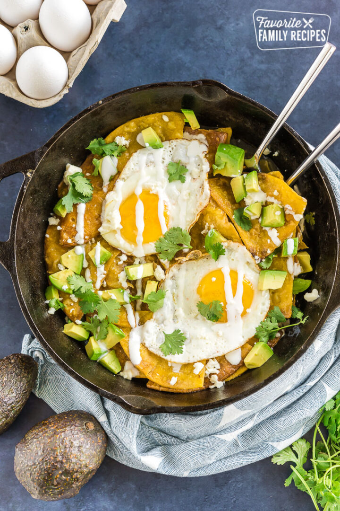

BREAKFAST

Breakfast Burritos
Give the morning some southwest flair. For example, add beans, potatoes or rice, salsa, and guacamole to the basic eggs and cheese filling.
Breakfast-Quesadillas
A breakfast quesadilla is similar to a breakfast burrito, however it is easier to eat and has an added crunch to the outer shell.

Gluten-Free-Blackberry-Pancakes
Yes, gluten free pancakes are for real! This recipe is so good, you won’t miss the gluten at all.

Chilaquiles
This popular breakfast enhances fried eggs by adding the flavors of Mexico, specifically fried corn tortillas, green salsa, and cilantro.
Shakshuka
A savory recipe enjoyed in Israel with poached eggs, a rich tomato sauce, and fresh cilantro.